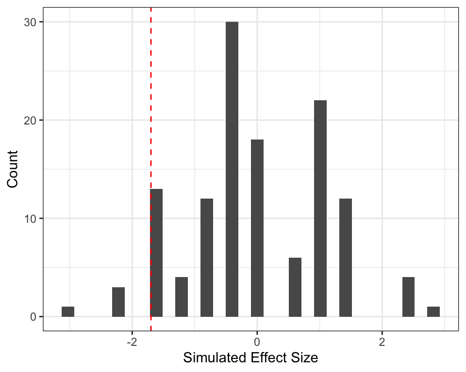
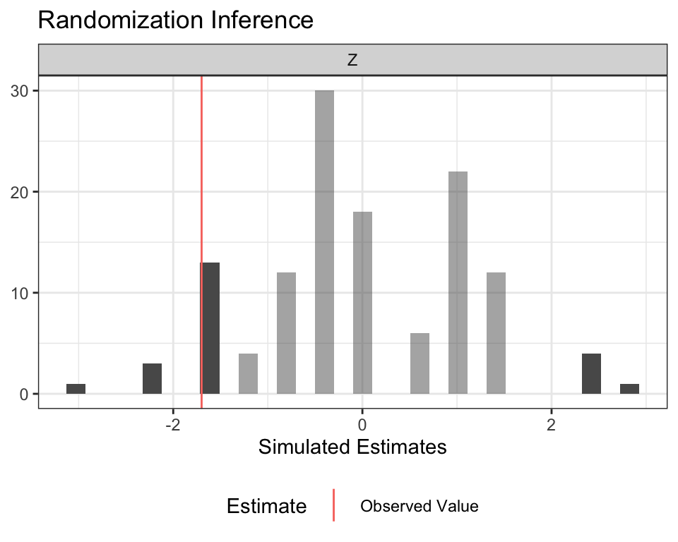

- Office hours
- Problem sets
- other admin stuff?
1/3/2020
Definitions:
…need to think of fun examples to begin lab :[
Which of these are observed?
| \(Y = 1\) | \(Y = 0\) | |
| \(D = 1\) | \(\mathbb{E}[Y_i(1)|D_i = 1]\) | \(\mathbb{E}[Y_i(0)|D_i = 1]\) |
| \(D = 0\) | \(\mathbb{E}[Y_i(1)|D_i = 0]\) | \(\mathbb{E}[Y_i(0)|D_i = 0]\) |
Which of these are observed?
| \(Y = 1\) | \(Y = 0\) | |
| \(D = 1\) | \(\mathbb{E}[Y_i(1)|D_i = 1]\) | \(\mathbb{E}[Y_i(0)|D_i = 1]\) |
| \(D = 0\) | \(\mathbb{E}[Y_i(1)|D_i = 0]\) | \(\mathbb{E}[Y_i(0)|D_i = 0]\) |
maybe put in appendix?
If \(\{Y_i(1), Y_i(0)\} \perp D_i\) and SUTVA hold, the population average treatment effect, \(ATE = \mathbb{E}[Y_i(1) - Y_i(0)]\), is identified.
Define the sharp null hypothesis as: \[H_0: Y_i(1) - Y_i(0) = 0\] for all units \(i\).
Note that this is "stronger" than: \[\mathbb{E}[Y_i(1) - Y_i(0)] = 0\]
Under the null (\(H_0: Y_i(1) = Y_i(0)\)), we can construct an exact
How? Assuming \(Y_i(1) = Y_i(0)\) means that we observe both potential outcomes for unit \(i\)! Thus, allowing us to simulate all possible randomizations with the full set of potential outcomes.
Then we ask: "If this null were true, how likely am I to get the estimate that I actually obtained?"
Suppose we have a vector of observed outcomes from an experiment with 9 observations where 5 units were treated.
# Observed outcomes Y <- c(0, 1, 4, 3, 0, 3, 0, 0, 3) # Treatment assignment d <- c(1, 1, 0, 0, 1, 1, 0, 1, 0) # compute the sample ATE obs.sate <- mean(Y[which(d==1)]) - mean(Y[which(d==0)]) obs.sate
## [1] -1.7
Create matrix of all possible treatment assignments for all 9 units.
# number of units n <- 9 # units can either be given treatment or not D <- c(0,1) # permute treatment assignments all_permute_treatment <- expand.grid(rep(list(D),n)) #dim(all_permute_treatment) = 512 x 9 head(all_permute_treatment)
## Var1 Var2 Var3 Var4 Var5 Var6 Var7 Var8 Var9 ## 1 0 0 0 0 0 0 0 0 0 ## 2 1 0 0 0 0 0 0 0 0 ## 3 0 1 0 0 0 0 0 0 0 ## 4 1 1 0 0 0 0 0 0 0 ## 5 0 0 1 0 0 0 0 0 0 ## 6 1 0 1 0 0 0 0 0 0
# selecting only the rows where the number of treated is equal to 5 all_permute_treatment <- all_permute_treatment[rowSums(all_permute_treatment) == 5, ] #dim(all_permute_treatment) = 126 x 9 (see additional notes) head(all_permute_treatment, n = 10)
## Var1 Var2 Var3 Var4 Var5 Var6 Var7 Var8 Var9 ## 32 1 1 1 1 1 0 0 0 0 ## 48 1 1 1 1 0 1 0 0 0 ## 56 1 1 1 0 1 1 0 0 0 ## 60 1 1 0 1 1 1 0 0 0 ## 62 1 0 1 1 1 1 0 0 0 ## 63 0 1 1 1 1 1 0 0 0 ## 80 1 1 1 1 0 0 1 0 0 ## 88 1 1 1 0 1 0 1 0 0 ## 92 1 1 0 1 1 0 1 0 0 ## 94 1 0 1 1 1 0 1 0 0
. . .
We want to simulate a distribution of a test statistic under the sharp null. For example, here we are calculating the sample ATE (the difference-in-means estimator) for each permutation.
permute.sate <- c(length(all_permute_treatment))
for(i in 1:nrow(all_permute_treatment)){
D_star <- unlist(all_permute_treatment[i,])
permute.sate[i] <- mean(Y[which(D_star==1)]) - mean(Y[which(D_star==0)])
}
quantile(permute.sate, c(0.025, 0.975))
## 2.5% 97.5% ## -2.09375 2.35000
# this is our sampling distribution! library(ggplot2) qplot(permute.sate) + labs(x = "Simulated Effect Size", y = "Count") + geom_vline(xintercept = obs.sate, lty =2, col = "red") + theme_bw()

# This is a two sided test t_star <- length(permute.sate[which(abs(permute.sate) >= abs(obs.sate))]) # t_star = 22
t_star/nrow(all_permute_treatment)
## [1] 0.1746032
All this can be done easily with the ri2 package!
declare_ra() and conduct_ri()library(ri2) # using the same toy example... dat_table <- data.frame(Z = d, Y = Y) # "declare" your randomization procedure: we have 9 observations, 5 of which are treated declaration <- declare_ra(N = 9, m = 5) # Conduct Randomization Inference ri <- conduct_ri( formula = Y ~ Z, declaration = declaration, sharp_hypothesis = 0, data = dat_table )
Look familiar?
summary(ri)
## term estimate two_tailed_p_value ## 1 Z -1.7 0.1746032
plot(ri)

Are the following equalities always true?
For \(N\) observations, where \(n_t\) denotes the number of observations in the treated group, \(n_c\) is number of observations in the control group, and \(n_t + n_c = N\), the permutation of assignments is: \[{N\choose n_t} = \frac{N!}{n_t!(N-n_t)!}= \frac{N!}{n_t! n_c!}\]
Consider our first example: N = 9, treated = 5, control = 4
factorial(9)/(factorial(5)*factorial(4))
## [1] 126